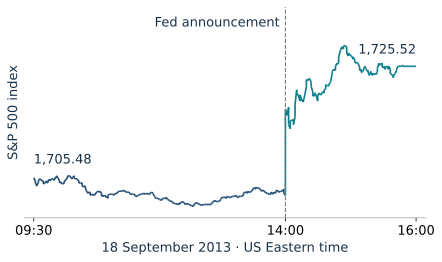
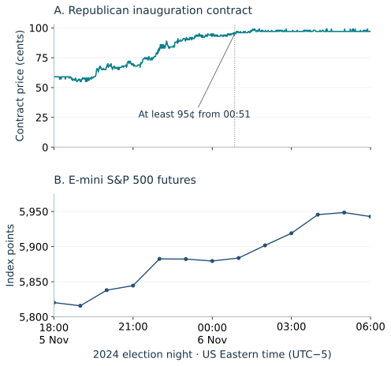
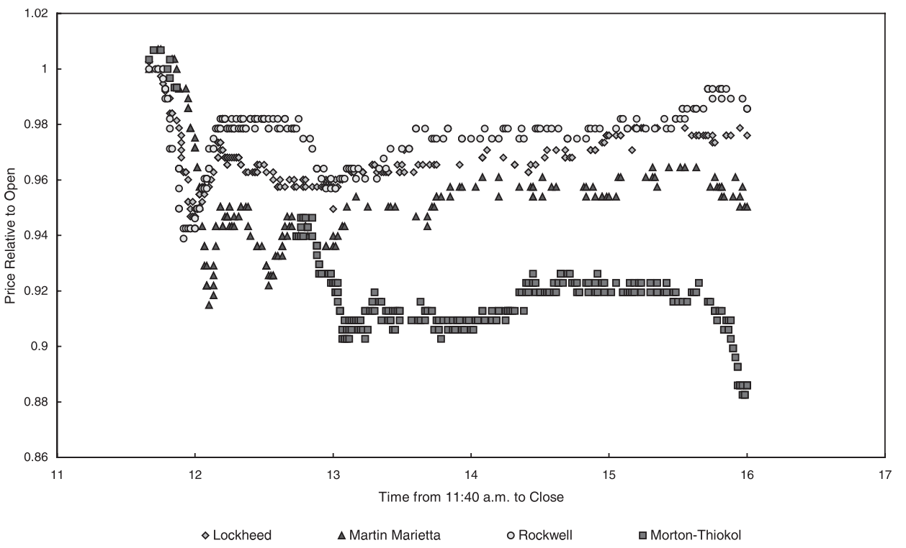
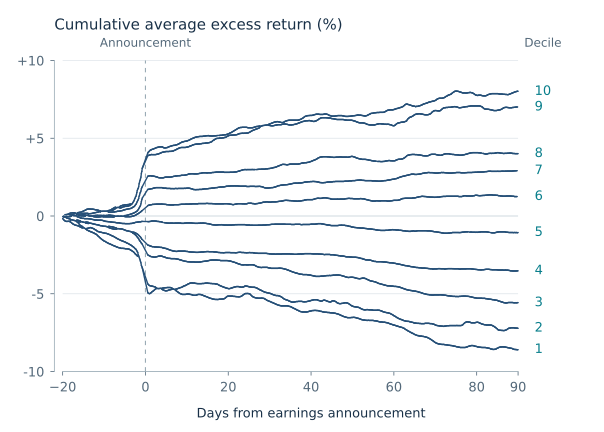
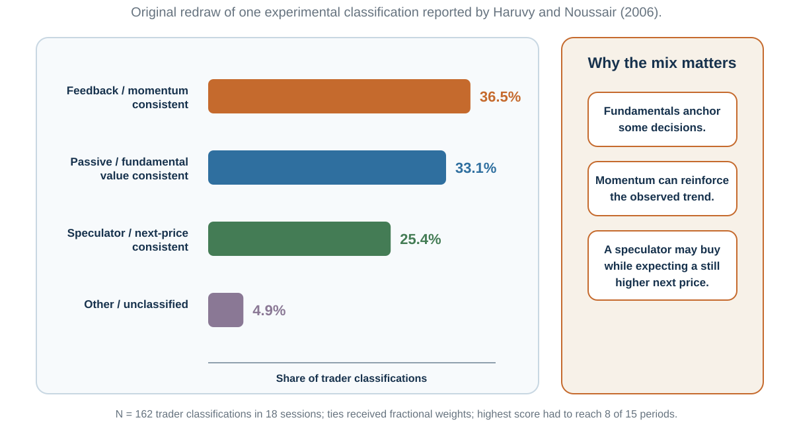

Prices as Social Signals
“We simply attempt to be fearful when others are greedy and to be greedy only when others are fearful.”
— Warren Buffett, 1986 letter to Berkshire Hathaway shareholders, 27 February 1987
A listed company reports earnings above the analyst consensus before the market opens. Should you buy immediately, wait, or do nothing?
The announcement sounds encouraging, but suppose you can place an order only five minutes after reading it. By then the price may already reflect the news. Buying makes sense only if that available price still leaves an attractive return for the risk and costs; recognizing a successful company is not enough.
The €20 note in Figure 27.1 poses a related puzzle: an obvious reward invites someone to collect it. In a market, that competition can change the available price before a slower investor acts. Before reading on, record when you learned the news, what further reaction you expect, and what costs your order would incur.
Learning goals
- Interpret rapid responses to news and explain why a correct reading of a headline may arrive too late to earn an abnormal return.
- Distinguish rapid information incorporation, no free lunch, and fundamental-value accuracy; evaluate historical return patterns against risk, costs, and competing explanations.
- Explain how cash flows, growth, discounting, and financing affect asset values and how limits to arbitrage can allow mispricing to persist.
- Compare historical bubbles and experiments on experience, liquidity, expectations, and trading rules without treating their evidence as interchangeable.
- Produce a falsifiable market memo and a two-direction bubble dashboard with a robust action.
Prices often move before you can trade
The first question is empirical: what happens to prices when news arrives? A useful example has an identifiable surprise, a reliable release time, and prices observed closely enough to show the response. Three cases distinguish a scheduled announcement, information arriving throughout a night, and dispersed clues about an unexpected disaster.
A scheduled announcement: unchanged policy can be surprising
At 14:00 US Eastern time on September 18, 2013, the Federal Reserve announced that it would continue buying $40 billion of mortgage-backed securities and $45 billion of longer-term Treasury securities each month. Markets had expected a reduction. Maintaining the $85 billion total therefore changed expectations even though the policy itself was unchanged (Federal Open Market Committee, 2013).
In Figure 27.2, the S&P 500 moves sharply at the announcement. The relevant comparison for a trader is the price available after learning the news, not the earlier price visible on the chart. An order submitted after reading and interpreting the announcement cannot retrospectively capture that initial jump.

This is the first lesson of the earnings puzzle: a favorable outcome matters through its unexpected component. Excellent earnings can disappoint a market that expected even more; unchanged policy can surprise a market that expected a change. The chart illustrates a rapid response to a particular announcement, not a complete test of whether all relevant information was incorporated correctly.
Election night: the announcement may confirm what prices already reflect
An election provides a different information process. Results arrive from many places over several hours, and traders update before any broadcaster declares a winner. The 2024 US election example in Figure 27.3 aligns a prediction-market contract with a broad equity-index futures price. The top panel records the price of a Kalshi contract paying $1 if Donald Trump or another Republican was inaugurated; the lower panel records E-mini S&P 500 futures during the same night.
A contract price of 95 cents can be read approximately as a 95% market-implied probability under simplifying assumptions about risk preferences and trading frictions. It is neither vote share nor certainty, and its settlement condition matters. In the recorded minute closes, the price first reached 95 cents at 23:30, later dipped below it, and remained at or above it from 00:51 onward through the end of the observed series at 07:00. A threshold crossing and a sustained change convey different information.

The Associated Press declared Trump the winner at 05:34, after other organizations had already made projections (Associated Press, 2024). By then, much of the information behind the declaration was already public. A trader buying only upon reading that headline would therefore need to explain what remained unanticipated. Across the displayed 18:00–06:00 window, futures rose from 5,820.25 to 5,942.75, about 2.1%. That whole-window change is not an estimate of the effect of any one news item.
Futures are contracts whose value is linked to an underlying asset or index. Equity-index futures can trade while the regular US stock session is closed, making them useful for observing overnight responses. The futures price need not equal the cash index because financing and expected dividends matter. The two panels also price different things: the inauguration outcome in one, and expectations about company earnings, policy, discount rates, and risk in the other. Their co-movement alone does not isolate which of these channels caused the equity response.
The lecture’s September 11, 2001 futures chart offers a related contrast: prices adjusted as the attacks unfolded, with a further sharp decline around the second plane’s impact (Siegel, 2008, Figure 13-1). The informational meaning of an unfolding event can change. Neither that chart nor hourly election observations identify response speed in milliseconds. The general point is that prices respond to arriving information, which need not coincide with the time a reader encounters a settled account of events.
Challenger: prices can combine dispersed clues
The space shuttle Challenger exploded at 11:39 a.m. on January 28, 1986; a Dow Jones newswire report followed at 11:47. All four major publicly traded contractors initially lost value. In Figure 27.4, however, Morton Thiokol separates from the others. Measured from the previous day’s close, its stock fell 11.86%, compared with declines of roughly 2–3% for Lockheed, Martin Marietta, and Rockwell. Months later, the presidential commission identified failure of the booster O-ring seals supplied by Thiokol (Maloney & Mulherin, 2003).

Maloney and Mulherin found no single public report or clear insider-trading explanation that accounted for the market’s early discrimination. Their interpretation is that trading combined dispersed information and inference. This is evidence of successful price discovery in one episode, not evidence that the market already possessed the commission’s complete engineering explanation.
These cases make rapid information incorporation a serious benchmark. Financial markets have high stakes, professional participants, and rewards for identifying opportunities. They also raise the question that motivates behavioral finance: if competition is so powerful, why do some return patterns and apparent pricing errors survive?
What market efficiency does—and does not—claim
The familiar joke says that a financial economist would not pick up the €20 note because someone would already have taken genuine money. Its useful intuition is competition for an obvious reward. Its mistake is treating the absence of opportunities as a premise that needs no observation. Search takes time and resources; a reward can remain precisely because it has not yet been noticed or is costly to collect.
The efficient market hypothesis concerns the incorporation of a specified information set into prices, conditional on a model of expected returns (Fama, 1970, 1991):
- Weak form: the information set includes historical prices and returns.
- Semi-strong form: it includes publicly available information.
- Strong form: it includes all information, even private information—a much stronger benchmark.
Three claims are easily confused:
- Information is incorporated quickly. Price responds to a specified signal.
- No free lunch. A public rule does not reliably earn abnormal return after appropriate risk and realistic costs.
- The price is right. Market price equals a well-defined fundamental value.
The first two do not automatically establish the third. A price can be difficult to beat and still differ from a defensible estimate of fundamental value. Conversely, an apparent pricing error may offer no low-risk, implementable profit. Prices are also forecasts made under uncertainty: an outcome that later surprises investors does not by itself show that the earlier price was unreasonable.
Grossman and Stiglitz (1980) explain why perfect information incorporation is problematic when information is costly. If prices revealed all such information perfectly, nobody would pay to collect it; if nobody collected it, prices could not reveal it. Informed trading must be rewarded sufficiently to sustain information acquisition. The €20 analogy now returns as an equilibrium question: who searches, what does searching cost, and what rewards make the effort worthwhile?
Behavioral finance studies how beliefs, attention, preferences, and constraints affect investors and prices (Barberis & Thaler, 2003). A biased investor does not imply a biased market, because other traders may offset the error. A market explanation therefore needs both a source of demand that moves prices and a reason competition does not eliminate its effect.
Historical return patterns complicate the picture
Rapid adjustment around some events can coexist with slower adjustment elsewhere. An event study compares returns around an identifiable event with returns predicted by a stated benchmark, then combines the differences across time or securities (MacKinlay, 1997). These differences are called abnormal returns; their cumulative sum shows whether the response is concentrated near the event or continues afterward.
Earnings surprises can be followed by drift
Rendleman, Jones, and Latané (1982) grouped companies by standardized unexpected quarterly earnings. In Figure 27.5, the more favorable surprises are associated with higher cumulative abnormal returns. Crucially, the groups continue separating after the announcement rather than becoming flat once the initial response has occurred. The authors estimated that roughly half of the adjustment to unexpected earnings in their 1970s sample occurred during the following 90 days.

This post-earnings-announcement drift challenges immediate and complete adjustment under the study’s benchmark. Limited attention, conservative updating, or gradual diffusion could contribute. Those explanations must still compete with risk, measurement, and implementation accounts. Knowing the historical average path is different from identifying, in real time, the firms and execution prices needed to earn it.
Size, value, momentum, and reversal ask different questions
The other lecture comparisons sort stocks by company size, valuation, or previous returns. Size refers to market capitalization. Value stocks have low prices relative to accounting measures such as earnings or book equity; growth stocks have high prices relative to those measures, often because investors expect strong future growth. Book value is an accounting measure of shareholders’ equity, not the current market value of the company.
Dividend yield divides dividends per share by price. A high yield can reflect generous distributions or a depressed price because investors expect a dividend cut. Sorting jointly by size and valuation asks whether, for example, small value stocks behave differently from small growth stocks; it does not establish that size and value are interchangeable explanations.
A low price-to-earnings ratio is not proof of a bargain, and a successful growth company is not automatically a superior investment. Its success may already be expensive to buy. The lecture’s comparison of IBM and Standard Oil of New Jersey over 1950–2012 illustrates this distinction: stronger operating growth and greater price appreciation did not translate into the higher total shareholder return once dividends and purchase valuations were considered (Siegel, 2014). The example motivates a valuation question; two selected companies do not establish a general trading rule.
The evidence extends beyond individual examples. Fama and French (1998) found that high book-to-market value portfolios outperformed low book-to-market growth portfolios in 12 of 13 major markets during 1975–1995; the difference for their global portfolios averaged 7.68 percentage points annually. The result is historical and benchmark-dependent. It does not imply that value wins in every country, subperiod, or future market.
Table 27.1 brings these findings together. Notice that momentum and reversal use different horizons: continuation over several months can coexist with reversal over several years. A useful explanation states the horizon and mechanism before seeing the price path.
| Pattern | Historical finding | Behavioral possibility | Rival account and implementation gate |
|---|---|---|---|
| Size | Smaller firms earned higher average returns in an early U.S. sample (Banz, 1981). | Neglect, limited attention, or segmented demand | Priced risk, illiquidity, micro-cap trading costs, sample sensitivity, and later attenuation |
| Value | Stocks priced low relative to book value, earnings, or cash flow outperformed higher-priced “growth” stocks in influential U.S. and international samples (Fama & French, 1992, 1998). | Extrapolation of growth stories or overreaction to past performance | Distress or another priced risk, changing definitions, portfolio construction, and costs |
| Momentum | Recent winners outperformed recent losers over intermediate horizons in the historical U.S. sample studied by Jegadeesh and Titman (1993). | Underreaction, gradual information diffusion, or herding | Time-varying risk, crash exposure, turnover, crowding, and trading costs |
| Long-run reversal | Extreme prior losers outperformed prior winners over longer horizons in an early study (De Bondt & Thaler, 1985). | Overreaction followed by correction | Benchmark and size effects, survivorship, overlapping formation periods, and implementability |
| Earnings drift | Returns continued in the direction of earnings surprises after announcements in the studied samples (Rendleman et al., 1982). | Conservatism, inattention, or gradual updating | Expected-return model, confounding news, measurement, tradable timing, liquidity, risk, and costs |
Every efficiency test is a joint test
The historical patterns raise a problem: to label a return abnormal, we must first say what return was expected. Suppose an asset earns 12%. That is not evidence of mispricing until we specify its risk, exposures, time period, benchmark, and costs.
The capital asset pricing model (CAPM) relates an asset’s expected excess return to its exposure to the market’s excess return. Its beta measures that exposure; an estimated alpha is the average return left unexplained by the fitted benchmark. Multifactor models allow several systematic exposures. An alpha can change when the benchmark changes, so it is not a model-free measure of skill. A more elaborate model is not automatically a better explanation either: its factors and tests need an economic justification (Sharpe, 1964; Fama & French, 1993).
Fama (1991) emphasizes the joint-hypothesis problem: a test evaluates market efficiency together with an asset-pricing model. A rejection may reflect inefficient prices or an inadequate expected-return model. Unrealistic execution, omitted costs, or selection of the sample and statistic can further undermine an apparent trading opportunity.

Figure 27.6 separates explaining a return pattern from establishing whether it survives realistic trading conditions and new observations. An event study measures returns around a defined event against a stated expected-return model. The optional research track shows how to audit its timing, comparison, and uncertainty, using earnings announcements as an example.
The lecture’s longer value-return chart makes the same practical point: a favorable full-sample average can contain prolonged intervals of disappointing performance. A changing premium could reflect competition, changing risks, valuations, or the chosen sample. It cannot be attributed to arbitrage merely because the advantage became smaller. Once a rule is widely known, however, the original trading conditions cannot simply be assumed to persist.
Limits to arbitrage: the costs and risks of correcting mispricing
Recognizing an apparent error does not ensure that a trader can correct it. A strict arbitrage locks in a gain without a possible loss under the stated assumptions. For example, if one dollar buys €0.6455 and each euro buys ¥159.34, the indirect route yields about ¥102.85 per dollar. A direct rate of ¥100 would permit a currency round trip with a gain if all quoted trades could be executed simultaneously without fees or borrowing costs. In practice, bid–ask spreads, execution, and financing determine whether such a gap is usable. Many trades described as arbitrage instead bet on two prices eventually moving into a more defensible relation. That correction can take time and expose the trader to losses. Shleifer and Vishny (1997) show why informed traders may be unable or unwilling to make it happen:
- Fundamental risk: the asset’s underlying value can worsen before convergence.
- Noise-trader risk: mispricing can become larger before it becomes smaller.
- Horizon risk: clients or managers may withdraw capital after interim losses.
- Short-sale constraints: borrowing can be unavailable, recalled, or expensive.
- Model risk: the apparent mispricing may be the analyst’s error.
- Transaction and funding costs: spreads, market impact, leverage, and margin calls can dominate.
Professional incentives can shorten the horizon precisely when a long-horizon correction is expected. An arbitrageur can be right eventually and insolvent first. Behavioral market outcomes therefore require both a source of biased demand and a reason better-informed capital does not fully offset it.
On March 2, 2000, 3Com sold about 5% of its Palm subsidiary and announced an intention—subject to conditions—to distribute the remaining Palm shares to 3Com shareholders at roughly 1.5 Palm shares per 3Com share. Ignoring timing, taxes, and frictions, a 3Com share should therefore reflect the value of roughly 1.5 Palm shares plus its claim on 3Com’s other businesses.
After Palm’s first trading day, observed prices implied that the residual 3Com businesses were worth about negative $22 billion in Lamont and Thaler’s (2003) calculation. Simple addition makes that hard to defend. Yet Palm shares were scarce to borrow, shorting was costly and risky, and the distribution was delayed and conditional. The case is unusually strong evidence of relative-value mispricing—and equally strong evidence that a visible inconsistency need not create a riskless free lunch.
The lecture’s CUBA fund example connects these constraints back to news. After the December 2014 announcement of steps toward US–Cuba normalization, the Herzfeld Caribbean Basin Fund’s share price rose much more than the value of its portfolio. It did not own Cuban securities. Thaler (2016) uses the widening premium to illustrate demand apparently responding to a salient name and story. A closed-end fund’s shares trade separately from its portfolio, so net asset value is a useful comparison, but holders cannot generally redeem each share immediately for that value. The episode shows why rapid reaction and accurate valuation are separate questions; it does not make every closed-end-fund premium irrational.
What gives an asset fundamental value?
The Palm–3Com comparison uses two related claims to expose a price inconsistency. A broader bubble claim needs a benchmark for the asset itself. What benefits does ownership provide, and what are they worth today?
An asset is a resource or claim expected to provide economic benefits. A share of stock represents fractional ownership of a company; a bond promises payments to a lender, subject to default risk and its contractual terms. These are the equity and debt forms of financial capital. Banks channel deposits and other funding into loans, investment banks help firms issue and underwrite securities, arranging their sale and sometimes bearing the risk of unsold issues, and mutual funds and pension funds pool investments. These institutions matter for bubbles because they influence who can buy, how purchases are financed, and where losses go.
For a shareholder, profits can support dividends or share repurchases, or remain in the firm to finance investment, acquisitions, and debt repayment. Retained earnings create value when their use improves future benefits to shareholders sufficiently to justify the resources committed. Accounting earnings are therefore informative about value, but they are not identical to cash immediately available to an investor. Buying back shares is a distribution to selling shareholders, not the creation of additional operating profit.
Most claims that a market is overvalued face a harder problem: fundamental value is not printed beside the price. It depends on uncertain cash flows, risk, discounting, and a terminal value. A simplified discounted-cash-flow model adds the present value of the expected payments and the expected sale price at the end of the chosen horizon.
The adjustment must reflect both timing and risk. Discounting risky expected cash flows at a risk-free rate without a risk adjustment can misstate value; it overstates value when the claim requires a positive risk premium. The assumed terminal price also needs a valuation argument; extrapolating recent price gains simply moves the disputed belief to the end of the calculation. Before calling a price irrational, state the growth, margin, risk-adjustment, discount-rate, and terminal assumptions that would make it reasonable.
A constant-growth example makes the sensitivity concrete. In a hypothetical model where dividends grow indefinitely, a next-period dividend of €2, a required return of 8%, and growth of 3% imply a value of €40. Raising assumed growth to 4% increases it to €50. The arithmetic is exact within the model; the difficult work is defending the assumptions, especially growth continuing indefinitely. A low safe interest rate may support higher valuations, but risky equity generally requires a risk premium as well.
The price-to-earnings ratio, or P/E, divides the share price by earnings per share. It summarizes how much investors pay for one year’s reported or forecast earnings. It is not generally the number of years needed to recover the purchase price: that interpretation would require constant earnings paid out entirely, with discounting and risk ignored. A high P/E can reflect expected growth, low required returns, temporarily depressed earnings, or overoptimism. When earnings are negative or close to zero, the ratio becomes especially difficult to interpret.
Long historical price-and-earnings charts motivate the question of whether valuations have become detached from plausible future payouts. Shiller’s (1981) excess-volatility analysis compared observed price variation with a benchmark based on discounted subsequent dividends. Its interpretation depends on the assumptions about expected returns and the dividend process. The cyclically adjusted P/E ratio, or CAPE, divides real prices by average real earnings over the preceding ten years to reduce sensitivity to a single year’s earnings. Historical valuation peaks, including 1901, 1929, 1966, and 2000, are useful comparisons, not a calendar for the next crash (Shiller, 2000, 2013).
How feedback can sustain a price bubble
A price boom is an observed increase. A bubble is a sustained price deviation above a defensible fundamental-value benchmark. Identifying the latter requires more than showing that prices rose dramatically and later fell. Expectations about profits, discount rates, and risk may have changed, and our valuation model may be wrong. Behavioral accounts add a mechanism explaining how demand can reinforce the deviation.
A bubble diagnosis becomes more plausible when recent gains increase expectations of further gains, attract attention and financing, induce demand or strategic resale, and thereby validate the forecast temporarily (Shiller, 2000; Greenwood & Shleifer, 2014).

The separate paths in Figure 27.7 allow a boom to begin with genuine innovation and later acquire a feedback component. Credit can amplify buying, but the loop does not require it.
How resale expectations can sustain a boom and crash
A buyer can believe that a price exceeds their own estimate of fundamental value and still purchase because they expect to resell to someone else at a higher price. The payoff then depends not only on cash flows but on beliefs about later buyers’ beliefs and on exiting before the correction. This is the recursive prediction problem in Chapter 23’s beauty contest, now with a financial consequence: accurately forecasting the next buyer can reward a trade the buyer would reject on cash-flow value alone.
This is often called the greater fool theory. The label is provocative, but the mechanism is precise: an anticipated resale price makes buying attractive even when the expected payouts from holding the asset do not. Disagreement and constraints on short selling can give this resale option value (Scheinkman & Xiong, 2003). When expectations reverse, many holders may want to exit together. Buyers need not disappear at every conceivable price; the danger is that sufficient buyers are unavailable near the prices sellers expected, so even a modest sale can require a large price concession.
Skeptical traders face the mirror problem. Even when many privately judge the price fragile, each may be uncertain about when the others will act. Selling or shorting too early can be costly, and funding or career pressure can force an informed trader out before convergence. Abreu and Brunnermeier (2003) formalize how this synchronization risk can delay correction. Shared doubt is not the same as coordinated correction.
Historical accounts often describe an initial opportunity, widening participation, exuberance, distress, and panic (Kindleberger & Aliber, 2011). A widely used teaching diagram calls these the stealth, awareness, mania, and blow-off phases (Rodrigue, n.d.). Treat that sequence as a possible feedback process:
- An opportunity attracts buyers. A technology, policy change, new market, or financing innovation can improve genuine prospects.
- The price rise recruits further demand. Early gains attract attention, imitation, and extrapolation. Successful buyers may appear more knowledgeable than they are.
- Financing and resale expectations sustain participation. Rising collateral values can permit more borrowing, while people who doubt the valuation may still expect to sell at a profit.
- The process reverses. Disappointing cash flows, tighter funding, increased supply, or a change in expectations can reduce demand. Falling collateral values and margin calls may then force further selling.
A temporary recovery during the decline can encourage the belief that the market is returning to normal. But the labels in a cycle diagram are usually assigned with hindsight. They do not identify today’s phase reliably, establish that early buyers were informed, or imply that every boom follows the same path. Stories such as the shoeshine boy whose stock tips supposedly prompted Joseph Kennedy to exit before 1929 express concern about widespread participation; they are anecdotes, not verified trading signals.
Historical bubbles: recurring feedback, different institutions
Table 27.2 compares episodes across several centuries, distinguishing speculative asset-price booms from broader credit booms and crises. The dates identify broad episodes, not identical national turning points. The central comparison is what investors were buying, what financed the expansion, and how a reversal could spread losses.
| Episode | What expanded | What the comparison teaches |
|---|---|---|
| Dutch tulipmania, 1636–1637 | Trading in rare bulbs and contracts for future delivery | Resale expectations can develop around a collectible; later stories can exaggerate participation and economic damage. |
| South Sea Company, Britain, 1720 | Company shares linked to government-debt conversion and overseas-trade expectations | Public backing and sophisticated investors do not prevent a speculative price rise. |
| Mississippi scheme, France, 1719–1720 | Company shares, public-debt conversion, and banknote issuance under John Law | Supporting asset prices through money creation can connect speculative demand to the monetary system. |
| U.S. equities, 1927–1929 | Shares during an economic and technological expansion, including purchases on margin | Genuine prosperity can coexist with fragile financing; a crash and a depression require separate explanations. |
| Lending to Mexico and other developing economies, 1970s | International bank lending, followed by the debt crisis beginning in 1982 | Optimism about repayment and continued refinancing can create vulnerability without a stock-market bubble. |
| Japanese property and equities, late 1980s | Land and share valuations supported by credit | Collateral values and lending can reinforce one another and leave prolonged balance-sheet problems. |
| Finland, Norway, and Sweden, late 1980s into early 1990s | Credit, property, and equity booms followed by banking crises, with different national timing | Liberalized credit markets can expand faster than the capacity to assess and absorb risk. |
| Mexico, early 1990s, and several Asian economies, 1992–1997 | Capital inflows; property, equity, and credit expansion in Thailand, Malaysia, Indonesia, and other Asian economies | Reversals of foreign financing add currency and refinancing risks. Mexico’s 1994–1995 crisis is distinct from the Asian crisis beginning in 1997. |
| U.S. internet and technology shares, 1995–2000 | Valuations and issuance around the commercialization of the internet | A transformative technology can succeed while prices paid for claims on its profits prove excessive. |
| Housing and credit, 2000s | Property and lending booms in the United States, Britain, Spain, Ireland, and Iceland, among others | Debt and interconnected intermediaries can turn a property correction into a wider financial crisis; exposures differed across countries. |
Early bubbles: tulips, shares, and state finance
Rare tulips were valued as cultivated curiosities and markers of taste in the seventeenth-century Netherlands. During 1636–1637, trading extended to contracts for bulbs still in the ground. A buyer could therefore participate partly because another collector or trader might later pay more. When confidence in continued buying failed in early 1637, prices collapsed and disputes arose over honoring contracts.
The familiar version depicts an entire nation gambling away its wealth. Goldgar’s (2007) archival research instead finds a much more limited network of participants and much less evidence of economy-wide ruin. Exceptional quoted prices should not be treated as typical completed cash transactions. The episode illustrates speculative resale, the social formation of value, and the importance of trust in promises.
The South Sea Company combined a role in managing British government debt with expectations of overseas trade. Its privileges included participation in the trade in enslaved Africans. The scheme’s appeal cannot be understood simply as investment in a productive business: debt conversion, political support, and expectations about future share demand also mattered. In 1720 its share price rose dramatically before collapsing (Kindleberger & Aliber, 2011; Odlyzko, 2020).
Isaac Newton’s investment history makes the timing problem vivid. An experienced investor, he sold South Sea holdings during the rise and made a substantial profit, then bought back at much higher prices and suffered large losses. Odlyzko’s (2020) reconstruction supports that sequence but also shows why a single exact loss figure is misleading: losses relative to initial wealth differ from losses relative to the wealth Newton could have retained after his early gains. The often-repeated £20,000 is an estimate, and he did not end bankrupt.
A successful exit can still leave an investor vulnerable to regret: watching the price continue to rise can turn a realized gain into a perceived missed opportunity.
In France, John Law’s system combined a trading company associated with Mississippi development, conversion of public debt into equity, and a bank issuing paper money. The arrangement promised a radical improvement in state finance. As share prices rose, supporting them became entangled with creating additional money. Velde (2003) argues that Law supported equity at an excessively high level, producing uncontrolled money creation; the system unraveled in 1720.
The comparison with South Sea matters because similar price trajectories can arise through different institutions. In the French case, demand for shares, the financing of the state, and confidence in money were directly connected. Explaining the crash therefore requires understanding those obligations as well as investor enthusiasm.
Modern booms and crashes: innovation, credit, and fragile expectations
The U.S. boom of the late 1920s accompanied real economic growth and enthusiasm for technologies and companies. Excitement extended across telephone, electrical-manufacturing, and radio companies. Buying shares on margin added a separate vulnerability: investors financed part of their purchases with borrowed money and could face demands for additional funds when prices fell. The October 1929 crash damaged wealth and confidence, but the subsequent Depression also involved banking panics, monetary contraction, and other failures. Treating the crash as its complete explanation misses those transmission mechanisms (Richardson et al., 2013).
Later episodes broaden the lesson beyond shares. During the 1970s, international banks expanded lending to Latin America. Higher interest rates, recession, and refinancing difficulties helped turn accumulated debt into a crisis; Mexico announced in August 1982 that it could no longer service its debt (Sims & Romero, 2013). Japan and the Nordic countries subsequently experienced property, equity, and credit booms, while the 1990s added major reversals of international capital flows. These episodes direct attention to who owes whom, in which currency, and at what maturity. A rising asset price and an expanding stock of debt are different facts, but their interaction can make the system fragile.
From the January 3, 1995 close of 743.58 to the March 10, 2000 peak close of 5,048.62, the NASDAQ Composite rose about 579%. By October 9, 2002, it closed at 1,114.11—a 77.9% decline from the peak (Federal Reserve Bank of St. Louis, 2026). Young internet firms faced genuine innovation, profound valuation uncertainty, restricted share supply, disagreement, and optimistic growth narratives (Ofek & Richardson, 2003).
Ofek and Richardson (2003) report that their equal-weighted internet index gained more than 1,000% from early 1998 through February 2000, then lost those gains by the end of 2000. Their evidence connects optimistic beliefs and short-sale restrictions to high prices, and the release of previously restricted shares to subsequent declines. The success of the internet as a technology did not guarantee that buyers would earn satisfactory returns at the prices they paid.
Beliefs about value and beliefs about the next price also diverged. Shiller (2013) reports that in spring 2000 only about 33% of institutional respondents and 28% of individual respondents in the Yale surveys regarded the market as not overvalued, although most expected it to rise over the following year. The responses show how widespread valuation doubts can coexist with expectations of further gains. Resale expectations and uncertainty about timing can sustain participation even when confidence in fundamental value is weak.
The U.S. housing boom connected a familiar asset to a complicated financing system. Buyers could justify higher prices through rents, housing services, limited supply, or lower financing costs, but expectations of continued appreciation also made purchasing and refinancing appear safer. A comparison with longer historical patterns asks whether rents, incomes, construction costs, and financing conditions plausibly supported the increase. Population growth alone cannot settle it, and national indexes conceal substantial regional differences.
Mortgage borrowing expanded alongside prices. Loans were packaged into securities held across the financial system, and many institutions depended on funding that had to be renewed frequently. When housing prices fell, refinancing became more difficult and mortgage losses increased. Uncertainty about who held the losses weakened confidence in counterparties and funding markets (Weinberg, 2013).
The damage spread beyond housing. The S&P 500 lost about 57% between its October 2007 peak and March 2009 trough (Rich, 2013). Equity markets across many countries also fell during 2008. Comparing those declines requires specifying dates, price versus total returns, and currency. A foreign investor’s dollar return can differ sharply from the same market’s local-currency return. The explanatory task is to trace exposures and financing, rather than assume that simultaneous losses establish identical national bubbles.
On October 19, 1987, the Dow Jones Industrial Average fell 22.6% in one day. Proposed explanations include changing economic expectations, portfolio-insurance selling, and strains in market liquidity and trading systems (Bernhardt & Eckblad, 2013). A later rebound cannot establish that the preceding valuation was correct, just as a crash alone cannot prove that it was a bubble.
Experimental markets: making the valuation benchmark observable
Field data rarely reveal fundamental value with certainty. Laboratory markets can define the dividend distribution, asset life, information, cash, short-selling rules, and trading institution. In the classic Smith, Suchanek, and Williams design, a finite-lived asset paid a dividend after each period. With no final redemption and negligible discounting over the short experimental session, the risk-neutral expected-dividend benchmark is the expected dividend per period multiplied by the number of periods remaining. Prices in many baseline markets nevertheless rose above the benchmark and later fell (Smith et al., 1988; Porter & Smith, 2003).
A finite-lived asset and a declining benchmark
In a common baseline parameterization, the asset lasts 15 periods and each period’s dividend is equally likely to be 0, 8, 28, or 60 cents. Averaging the four equally likely dividends gives 24 cents per period. Immediately before trading in the first period, 15 dividends remain, so the risk-neutral benchmark is 360 cents. It falls by 24 cents after each dividend opportunity, reaches 24 cents before the final dividend, and is zero after the asset expires. For comparison, an asset that pays 12 or 20 cents with equal probability has an expected dividend of 16 cents and an initial 15-period benchmark of $2.40.
Participants begin with cash and shares. In a double auction, buyers can submit bids and sellers can submit asks while observing other offers. Under the classroom implementation used here, an incoming order that crosses the best standing offer executes at that standing offer’s price. A trader can buy to collect remaining dividends or to sell again during the experiment. A resale changes who receives those dividends; it does not add dividends to the asset.
Prices in many inexperienced markets begin below the expected-dividend benchmark, rise above it, and fall late in the session. Initial underpricing could reflect risk aversion or uncertainty about the task and other traders. Later overpricing cannot be explained merely by learning that the asset has a larger expected dividend: the distribution is already given.
Bubble-like paths are not confined to groups of a dozen participants. Williams (2008) reports large computerized classroom markets, including one with 304 traders that exhibited a substantial boom and crash. Adding traders therefore does not automatically create independent judgments or eliminate feedback.
Bubbles with a constant fundamental-value benchmark
Many real assets do not mechanically lose one dividend’s expected value each short trading period. A useful experimental design therefore pays interest on cash, provides an expected dividend each period, and adds a final redemption payment. Choosing the redemption payment appropriately offsets the shortening dividend horizon, so the risk-neutral discounted benchmark stays constant.
For example, an expected dividend of $0.70 with 10% interest per period and one of $1.40 with 20% interest both imply a constant benchmark of $7 under this design. These are experimental per-period rates, not annual market rates. They also produce different flows of dividends and interest into traders’ accounts even though the benchmark is unchanged.
Bostian and Holt (2009) describe this design and report prices rising above the flat benchmark. Their higher-payment example illustrates how faster wealth accumulation can support larger price deviations. Because the dividend and interest processes change together, that comparison should not be described as a pure manipulation of initial cash. Experiments that vary initial cash directly provide complementary evidence (Caginalp et al., 1998).
Experience, liquidity, and trading rules change the result
Repeated experience often reduces bubbles in the same environment (Dufwenberg et al., 2005). That finding is more specific than saying that markets inevitably learn. Hussam et al. (2008) rekindled bubbles among experienced traders after changing liquidity and dividend uncertainty. Deck et al. (2014) introduced overlapping generations: new participants arrived with cash and older participants exited with cash, producing recurring price rises and falls within a single asset’s life. What the market has learned can change when its participants, resources, or rules change.
The cash-to-fundamental-value ratio compares cash available in a market with the aggregate benchmark value of its outstanding shares. More cash can allow optimistic traders to express greater demand without any increase in expected payouts. There is no universal ratio above which a bubble must occur. Prices depend on how participants use their purchasing power and on the institution through which bids become transactions.
The interventions in Table 27.3 change different parts of the market: available cash, borrowing, payout timing, or short selling.
| Condition studied | Main result in the cited setting | What the result can establish |
|---|---|---|
| More initial cash relative to assets | Prices increased when cash was more abundant (Caginalp et al., 1998). | Purchasing power can change prices with the dividend process held fixed. |
| Looser borrowing constraints | Relaxing credit constraints generated larger bubbles; higher exogenous income also raised prices (Coppock et al., 2021). | Borrowing capacity is one route through which demand expands. |
| Dividends paid later | Bubbles were less prevalent when dividends were concentrated at the end of the horizon (Smith et al., 2000). | Payment timing changes cash available for reinvestment and may help coordinate expectations; these channels need to be distinguished. |
| Short selling permitted | Short-sale capacity reduced overpricing but could produce prices below the benchmark (Haruvy & Noussair, 2006). | Giving pessimistic views greater trading capacity need not make prices exactly correct. |
| Resale ruled out | Bubbles and crashes still occurred when participants could buy or sell but could not speculate by buying and reselling (Lei et al., 2001). | Strategic resale is not necessary for every experimental bubble. |
| Another useful trading activity available | Much of the excess asset trading diminished when participants had another market activity (Lei et al., 2001). | The opportunity cost of attention and the laboratory’s implicit invitation to trade affect behavior. |
The no-resale result is particularly demanding for a pure greater-fool explanation. If traders cannot profit by passing the asset on, some other source of demand must account for the deviation. Confusion, valuation errors, preferences, and features of the trading task remain candidates. Tucker and Xu (2024) reproduced bubbles in a related no-speculation design but highlighted consequences of the restrictions themselves, including asymmetric endowments and changing cash-to-asset ratios and scarcity as trading proceeds.
Expectations and the strategies behind the price path
Holt et al. (2017) elicited short-term price forecasts and found that predictions typically trailed prices during the rise and remained above them during the decline. Forecast paths were too flat and did not generally anticipate the turning point. Haruvy et al. (2007) likewise show why measuring expectations adds information beyond observing transactions: the same purchase can reflect different views about value and future resale prices.
Different strategies can sustain the same path. A passive or fundamental-value trader buys below the benchmark and sells above it. A feedback trader increases demand after price rises and reduces it after falls, potentially amplifying the trend. A speculator may buy above a current value estimate when expecting a still higher next price. Haruvy and Noussair’s (2006) rule classified behavior only when a trader’s highest consistency score reached at least 8 of 15 periods; ties received fractional weights. Across 18 sessions with nine inexperienced participants each, the 162 trader classifications in Table 27.4 split across several patterns:

The mixture in Figure 27.8 shows several patterns of trading within the same experimental design. They help organize competing explanations for the price path, without establishing that every trader assigned a label used the same reasoning.
Payoffs and participants shape market behavior
The market rules are only part of the explanation: the payoff distribution and the people trading also matter. Two assets can have the same expected dividend while offering very different payoff distributions. In Ackert et al. (2006), a standard asset paid $0.50, $0.90, or $1.20 with probabilities 0.48, 0.48, and 0.04, giving an expected dividend of $0.72. A lottery asset paid $18 with probability 0.04 and zero otherwise, also averaging $0.72. In markets that developed bubbles, traders paid more for the lottery asset. Financing purchases from their own available funds and allowing short sales moderated the price run-ups.
Equal expected payouts do not imply that every preference model assigns equal value. Attraction to positively skewed payoffs and overweighting a small chance of a large gain are possible interpretations. The example connects asset trading to the treatment of small probabilities in Prospect Theory.
Individual differences also matter without translating automatically into market accuracy. Corgnet et al. (2015) found that higher cognitive reflection test scores were associated with higher earnings and trading more consistent with fundamentals. Bubbles occurred even when participants had earned their initial endowments through a task, although trading volume and earnings dispersion were higher with house money.
Market composition raises a related question about how individual differences combine in trading. The suggestion that “Lehman Sisters” would have avoided the crisis is a memorable prompt for a hypothesis. The experiments supply a more conditional answer. Eckel and Füllbrunn (2015) found larger bubbles in all-male than all-female markets in their declining-value design. Their later study did not find a significant difference when gender composition was obscured (Eckel & Füllbrunn, 2017). Holt et al. (2017) found similar bubbles across gender groups with flat fundamentals and unobtrusive sorting, but larger bubbles among men in a declining-value robustness treatment.
Wang et al. (2018) further found that all-female groups in China produced bubbles comparable to those in all-male groups, and larger than those in all-female U.S. groups. Cross-country comparisons also change more than one contextual feature and cannot isolate “culture” as if it were a randomly assigned treatment.
Nadler et al. (2018) tested a different question by experimentally administering testosterone or placebo to male participants. Testosterone administration generated larger and longer-lasting bubbles in that setting.
Evaluating competing explanations for a boom
A rising price can reflect improving prospects, a reinforcing trading process, or both. Treating every rise as confirmation of a bubble would make the diagnosis impossible to correct; dismissing every concern as innovation could leave growing exposure unchecked. Use both evidence columns in Table 27.5 to record what makes the price look fragile, what could justify it, and which observation would change your assessment. A probability can help when the event and horizon are well defined.
| Domain | Evidence that raises concern | Evidence that lowers concern |
|---|---|---|
| Fundamentals | Price requires extreme growth or implausibly low discount rates | Verifiable cash flows, productivity, scarcity, or lower required returns support the move |
| Expectations and trading | Forecasts extrapolate gains; turnover, attention, entry, and resale talk surge | Expectations remain dispersed and cash-flow theses remain testable |
| Leverage and liquidity | Credit, collateral loops, maturity mismatch, or one-sided liquidity expand | Financing is conservative, losses absorbable, and supply responsive |
| Arbitrage constraints | Shorting is costly; skeptical capital is horizon-constrained | Close substitutes and durable corrective capital exist |
Write both the fundamental story that would justify the price and the feedback story that would make it fragile. For each, name a discriminating observation. Even a high bubble probability does not reveal timing. Robust responses—limiting leverage and position size, stress-testing funding, preserving liquidity, and precommitting review conditions—may dominate a confident directional bet.
Investing when neither prices nor forecasts are infallible
Return to the earnings announcement. A vivid company story can attract attention, while a subsequent price rise appears to confirm that other investors share your information. If those investors are responding to the same announcement or copying the price, their behavior supplies less independent evidence than it seems.
After buying, the problem changes. You may search for reasons to defend the position, treat its purchase price as the point to recover, or evaluate every fluctuation in isolation. The chapters on defended beliefs, mental accounts, and reference points explain these possibilities. In a market, their consequences also depend on other traders, the size of the position, and the cost of changing it.
Barber and Odean (2000) found that, from February 1991 through January 1997, the most active fifth of brokerage households earned an annualized net return of 11.4%, compared with 18.5% for the least active fifth. The result is consistent with overconfidence plus trading costs.
Technical analysis uses past prices and trading volume to identify patterns; fundamental analysis evaluates the cash flows, risks, and valuation assumptions behind a security. Both can be disciplined or impressionistic. The lecture’s comparison of real and simulated price charts warns that a persuasive-looking trend can arise without predictive content. A moving-average strategy may avoid some large declines yet lose through repeated switches in a trendless market. Compare a prespecified rule with a feasible holding strategy, using the same dates, risk exposures, and costs; a smoother return distribution alone does not establish superior performance (Malkiel, 2015).
A broad, low-cost index fund provides a useful comparison for an active strategy because it reduces the need to identify tomorrow’s winners. Sharpe’s (1991) arithmetic clarifies the cost hurdle: collectively, active investors hold the portion of the market not held passively. Before costs, their dollar-weighted average return must match that market; higher aggregate costs then lower their average net return. This accounting argument does not require every price to be correct and does not promise that every index fund will outperform every active manager.
Diversification can reduce exposure to individual firms, while compounding makes both costs and losses consequential. A positive arithmetic average does not ensure a favorable outcome when the entire portfolio is repeatedly exposed to large losses.
A long horizon gives returns time to compound; it does not make losses impossible or a poor valuation harmless. Compare total returns, including reinvested dividends, over the same dates, and distinguish nominal from inflation-adjusted outcomes. Evidence that stocks outperformed bonds over many historical long horizons remains evidence about those samples, not a guarantee for every future investor (Siegel, 2014).
Preserve the pre-purchase record to apply the process–outcome distinction. A later gain should test the recorded thesis rather than erase weaknesses in the reasoning that produced it.
An investment story can adapt easily to the next price move: a rise appears to vindicate it, while a fall becomes an opportunity to buy more. Then no outcome teaches the investor when the reasoning has failed. Before buying, turn the story into a record that specifies what must happen, what would count against it, and what action follows. Write one page:
- Decision and noninvestment option. What exactly will be done, in what size, and why is doing nothing inferior?
- Thesis. State the causal claim in one sentence.
- Embedded expectations. What does the current price already require the firm or market to achieve?
- Base rate and comparison class. What happened in similar situations?
- Drivers. Name the two or three variables that must move.
- Disconfirmation. What observation would make the thesis materially less plausible?
- Risks and dependence. Which exposures could fail together?
- Implementation. Include spreads, liquidity, taxes, financing, capacity, and time horizon.
- Position and exit rules. Precommit a maximum exposure, review date, and conditions for reducing, adding, or closing.
- Evaluation. Separate frequent risk monitoring from the horizon on which performance will be judged.
Then red-team the memo. Look for an unfalsifiable escape (“the market will recognize it eventually”), a sunk argument (“we have already lost too much to sell”), a missing denominator, a selected backtest, or a position too large for the uncertainty.
Practice Lab
Bubble investigation. Choose one historical episode from Table 27.2. Write its fundamental-value story and its feedback story separately. Identify the financing arrangement, the evidence available before the reversal, and one observation that would distinguish the two stories. Compare it with one laboratory intervention from Table 27.3 and explain which institutional difference limits that comparison.
Classroom-market debrief. If class trading data are available, first reconstruct the dividend distribution, number of periods, redemption rule, interest rate, and borrowing or short-sale constraints. Then calculate the correct benchmark for that session and compare it with actual transactions and recorded forecasts. A six-period exercise has a different horizon from the classic 15-period market. Describe the observed path without assuming in advance that a bubble or a crash occurred.
News-timing comparison. Compare the Fed announcement with election night. Identify when the underlying information arrived, when a reader could have acted, and what the sampling frequency lets you infer. Explain why a headline can be favorable yet offer no obvious gain at the available price.
Event-study audit. Choose a published event study discussed in this chapter or a course-provided case containing the event time, benchmark, reported abnormal return, uncertainty, and potential confounds. Produce a one-page audit that records: first public time, expected-return model, estimation and event windows, main estimate with uncertainty, overlapping news, tradable timing, and costs. End with two sentences: the strongest warranted conclusion and one stronger claim the evidence does not support.
Advanced extension: reproduce the estimate only when the dataset, data definitions, and analysis code or a specified software template are provided. Compare your result with the published estimate and document every discrepancy before interpreting it.
Take it forward
The earnings announcement now poses a sharper question: what would have to be missing from the current price for buying at your available execution price to make sense? If the evidence does not answer it, a favorable headline alone cannot complete the argument. Keep the original record; later returns can then test a prediction instead of supplying a convenient explanation.
Prices can coordinate dispersed action without a single commander. Organizations also coordinate through leaders, roles, meetings, and assigned responsibilities. Authority, Groupthink, and Shared Responsibility asks when these concentrated social signals improve coordination and when they suppress evidence, dissent, ownership, or action.
Optional research notes
An event study estimates security returns around a defined event (MacKinlay, 1997). Audit its inferential chain in this order:
- Define the event and its first public time.
- Specify an estimation window for the expected-return model.
- Specify an event window in which reaction is measured.
- Compute abnormal return as actual return minus expected return.
- Aggregate across securities or time into average abnormal returns or cumulative abnormal returns.
- Test uncertainty and inspect confounding events.
For an audit, record the published answer to each step and mark missing information rather than inventing a price, return, or model. A full reproduction additionally requires the original sample-construction rules, data vintage, corporate-action handling, code, and trading assumptions.
If prices incorporate a clean public surprise rapidly, abnormal returns should cluster near the release. The continued separation after the announcement in Figure 27.9 can illustrate slow updating, but an observed pattern like this could also reflect a weak benchmark, overlapping news, trading frictions, or sample construction that would not have been available in real time.

Historical research on earnings announcements documented post-earnings-announcement drift: firms with high unexpected earnings continued, on average, to outperform firms with low unexpected earnings after the immediate announcement response in the studied samples (Rendleman et al., 1982). The pattern challenges the joint model used in the study.
References cited in this chapter
Abreu, D., & Brunnermeier, M. K. (2003). Bubbles and crashes. Econometrica, 71(1), 173–204.
Ackert, L. F., Charupat, N., Church, B. K., & Deaves, R. (2006). Margin, short selling, and lotteries in experimental asset markets. Southern Economic Journal, 73(2), 419–436. https://doi.org/10.1002/j.2325-8012.2006.tb00779.x
Associated Press. (2024, November 6). Calling the 2024 presidential race state by state. https://www.ap.org/the-definitive-source/behind-the-news/calling-the-2024-presidential-race-state-by-state/
Banz, R. W. (1981). The relationship between return and market value of common stocks. Journal of Financial Economics, 9(1), 3–18.
Barber, B. M., & Odean, T. (2000). Trading is hazardous to your wealth: The common stock investment performance of individual investors. Journal of Finance, 55(2), 773–806.
Barberis, N., & Thaler, R. (2003). A survey of behavioral finance. In G. M. Constantinides, M. Harris, & R. Stulz (Eds.), Handbook of the economics of finance (Vol. 1B, pp. 1053–1128). Elsevier.
Bernhardt, D., & Eckblad, M. (2013). Stock market crash of 1987. Federal Reserve History. https://www.federalreservehistory.org/essays/stock-market-crash-of-1987
Bostian, A. J. A., & Holt, C. A. (2009). Price bubbles with discounting: A web-based classroom experiment. Journal of Economic Education, 40(1), 27–37. https://doi.org/10.3200/JECE.40.1.027-037
Brunnermeier, M. K., & Oehmke, M. (2013). Bubbles, financial crises, and systemic risk. In G. M. Constantinides, M. Harris, & R. Stulz (Eds.), Handbook of the economics of finance (Vol. 2B, pp. 1221–1288). Elsevier.
Caginalp, G., Porter, D. P., & Smith, V. L. (1998). Initial cash/asset ratio and asset prices: An experimental study. Proceedings of the National Academy of Sciences, 95(2), 756–761.
Coppock, L. A., Harper, D. Q., & Holt, C. A. (2021). Capital constraints and asset bubbles: An experimental study. Journal of Economic Behavior & Organization, 183, 75–88. https://doi.org/10.1016/j.jebo.2020.10.024
Corgnet, B., Hernán-González, R., Kujal, P., & Porter, D. (2015). The effect of earned versus house money on price bubble formation in experimental asset markets. Review of Finance, 19(4), 1455–1488. https://doi.org/10.1093/rof/rfu031
De Bondt, W. F. M., & Thaler, R. (1985). Does the stock market overreact? Journal of Finance, 40(3), 793–805.
Deck, C., Porter, D., & Smith, V. L. (2014). Double bubbles in assets markets with multiple generations. Journal of Behavioral Finance, 15(2), 79–88. https://doi.org/10.1080/15427560.2014.908884
Dufwenberg, M., Lindqvist, T., & Moore, E. (2005). Bubbles and experience: An experiment. American Economic Review, 95(5), 1731–1737.
Eckel, C. C., & Füllbrunn, S. C. (2015). Thar SHE blows? Gender, competition, and bubbles in experimental asset markets. American Economic Review, 105(2), 906–920. https://doi.org/10.1257/aer.20130683
Eckel, C. C., & Füllbrunn, S. C. (2017). Hidden vs. known gender effects in experimental asset markets. Economics Letters, 156, 7–9.
Fama, E. F. (1970). Efficient capital markets: A review of theory and empirical work. Journal of Finance, 25(2), 383–417.
Fama, E. F. (1991). Efficient capital markets: II. Journal of Finance, 46(5), 1575–1617.
Fama, E. F., & French, K. R. (1992). The cross-section of expected stock returns. Journal of Finance, 47(2), 427–465.
Fama, E. F., & French, K. R. (1993). Common risk factors in the returns on stocks and bonds. Journal of Financial Economics, 33(1), 3–56. https://doi.org/10.1016/0304-405X(93)90023-5
Fama, E. F., & French, K. R. (1998). Value versus growth: The international evidence. Journal of Finance, 53(6), 1975–1999.
Federal Open Market Committee. (2013, September 18). FOMC statement. Board of Governors of the Federal Reserve System. https://www.federalreserve.gov/newsevents/pressreleases/monetary20130918a.htm
Federal Reserve Bank of St. Louis. (2026). NASDAQ Composite [NASDAQCOM]. FRED. Retrieved August 29, 2026, from https://fred.stlouisfed.org/series/NASDAQCOM
Goldgar, A. (2007). Tulipmania: Money, honor, and knowledge in the Dutch Golden Age. University of Chicago Press. https://press.uchicago.edu/ucp/books/book/chicago/T/bo5414939.html
Greenwood, R., & Shleifer, A. (2014). Expectations of returns and expected returns. Review of Financial Studies, 27(3), 714–746.
Grossman, S. J., & Stiglitz, J. E. (1980). On the impossibility of informationally efficient markets. American Economic Review, 70(3), 393–408.
Haruvy, E., Lahav, Y., & Noussair, C. N. (2007). Traders’ expectations in asset markets: Experimental evidence. American Economic Review, 97(5), 1901–1920.
Haruvy, E., & Noussair, C. N. (2006). The effect of short selling on bubbles and crashes in experimental spot asset markets. Journal of Finance, 61(3), 1119–1157.
Harvey, C. R., Liu, Y., & Zhu, H. (2016). … and the cross-section of expected returns. Review of Financial Studies, 29(1), 5–68.
Holt, C. A., Porzio, M., & Song, M. Y. (2017). Price bubbles, gender, and expectations in experimental asset markets. European Economic Review, 100, 72–94.
Hussam, R. N., Porter, D., & Smith, V. L. (2008). Thar she blows: Can bubbles be rekindled with experienced subjects? American Economic Review, 98(3), 924–937.
Jegadeesh, N., & Titman, S. (1993). Returns to buying winners and selling losers: Implications for stock market efficiency. Journal of Finance, 48(1), 65–91.
Kalshi. (n.d.). Historical candlesticks for PRES-2024-DJT, October–November 2024 [Data set]. https://docs.kalshi.com/api-reference/historical/get-historical-market-candlesticks
Kindleberger, C. P., & Aliber, R. Z. (2011). Manias, panics, and crashes: A history of financial crises (6th ed.). Palgrave Macmillan.
Lamont, O. A., & Thaler, R. H. (2003). Can the market add and subtract? Mispricing in tech stock carve-outs. Journal of Political Economy, 111(2), 227–268.
Lei, V., Noussair, C. N., & Plott, C. R. (2001). Nonspeculative bubbles in experimental asset markets: Lack of common knowledge of rationality vs. actual irrationality. Econometrica, 69(4), 831–859. https://doi.org/10.1111/1468-0262.00222
MacKinlay, A. C. (1997). Event studies in economics and finance. Journal of Economic Literature, 35(1), 13–39.
Malkiel, B. G. (2015). A random walk down Wall Street: The time-tested strategy for successful investing (11th ed.). W. W. Norton.
Maloney, M. T., & Mulherin, J. H. (2003). The complexity of price discovery in an efficient market: The stock market reaction to the Challenger crash. Journal of Corporate Finance, 9(4), 453–479.
McKinsey Global Institute. (2013, November). QE and ultra-low interest rates: Distributional effects and risks. https://www.mckinsey.com/featured-insights/employment-and-growth/qe-and-ultra-low-interest-rates-distributional-effects-and-risks
McLean, R. D., & Pontiff, J. (2016). Does academic research destroy stock return predictability? Journal of Finance, 71(1), 5–32.
Nadler, A., Jiao, P., Johnson, C. J., Alexander, V., & Zak, P. J. (2018). The bull of Wall Street: Experimental analysis of testosterone and asset trading. Management Science, 64(9), 4032–4051. https://doi.org/10.1287/mnsc.2017.2836
Odlyzko, A. (2020). Isaac Newton and the perils of the financial South Sea. Physics Today, 73(7), 30–36. https://doi.org/10.1063/PT.3.4521
Ofek, E., & Richardson, M. (2003). DotCom mania: The rise and fall of internet stock prices. Journal of Finance, 58(3), 1113–1137.
Porter, D. P., & Smith, V. L. (2003). Stock market bubbles in the laboratory. Journal of Behavioral Finance, 4(1), 7–20.
Rendleman, R. J., Jr., Jones, C. P., & Latané, H. A. (1982). Empirical anomalies based on unexpected earnings and the importance of risk adjustments. Journal of Financial Economics, 10(3), 269–287.
Rich, R. (2013). The Great Recession. Federal Reserve History. https://www.federalreservehistory.org/essays/great-recession-of-200709
Richardson, G., Komai, A., Gou, M., & Park, D. (2013). Stock market crash of 1929. Federal Reserve History. https://www.federalreservehistory.org/essays/stock-market-crash-of-1929
Rodrigue, J.-P. (n.d.). Stages in a bubble. The Geography of Transport Systems. https://transportgeography.org/contents/chapter3/transportation-and-economic-development/bubble-stages/
Scheinkman, J. A., & Xiong, W. (2003). Overconfidence and speculative bubbles. Journal of Political Economy, 111(6), 1183–1220.
Sharpe, W. F. (1964). Capital asset prices: A theory of market equilibrium under conditions of risk. Journal of Finance, 19(3), 425–442. https://doi.org/10.1111/j.1540-6261.1964.tb02865.x
Sharpe, W. F. (1991). The arithmetic of active management. Financial Analysts Journal, 47(1), 7–9. https://web.stanford.edu/~wfsharpe/art/active/active.htm
Shiller, R. J. (1981). Do stock prices move too much to be justified by subsequent changes in dividends? American Economic Review, 71(3), 421–436.
Shiller, R. J. (2000). Irrational exuberance. Princeton University Press.
Shiller, R. J. (2013). Yes, we’re confident, but who knows why. Yale Insights. https://insights.som.yale.edu/insights/yes-we-re-confident-but-who-knows-why
Shleifer, A., & Vishny, R. W. (1997). The limits of arbitrage. Journal of Finance, 52(1), 35–55.
Siegel, J. J. (2008). Stocks for the long run: The definitive guide to financial market returns and long-term investment strategies (4th ed.). McGraw-Hill.
Siegel, J. J. (2014). Stocks for the long run: The definitive guide to financial market returns and long-term investment strategies (5th ed.). McGraw-Hill.
Sims, J., & Romero, J. (2013). Latin American debt crisis of the 1980s. Federal Reserve History. https://www.federalreservehistory.org/essays/latin-american-debt-crisis
Smith, V. L., Suchanek, G. L., & Williams, A. W. (1988). Bubbles, crashes, and endogenous expectations in experimental spot asset markets. Econometrica, 56(5), 1119–1151.
Smith, V. L., van Boening, M., & Wellford, C. P. (2000). Dividend timing and behavior in laboratory asset markets. Economic Theory, 16(3), 567–583. https://doi.org/10.1007/PL00020943
Thaler, R. H. (2016). Behavioral economics: Past, present, and future. American Economic Review, 106(7), 1577–1600. https://doi.org/10.1257/aer.106.7.1577
Tucker, S., & Xu, Y. (2024). Nonspeculative bubbles revisited. Journal of Behavioral and Experimental Finance, 42, 100925. https://doi.org/10.1016/j.jbef.2024.100925
Velde, F. R. (2003). Government equity and money: John Law’s system in 1720 France (Working Paper No. 2003-31). Federal Reserve Bank of Chicago. https://www.chicagofed.org/publications/working-papers/2003/2003-31
Wang, J., Houser, D., & Xu, H. (2018). Culture, gender and asset prices: Experimental evidence from the U.S. and China. Journal of Economic Behavior & Organization, 155, 253–287. https://doi.org/10.1016/j.jebo.2018.09.003
Weinberg, J. (2013). The Great Recession and its aftermath. Federal Reserve History. https://www.federalreservehistory.org/essays/great-recession-and-its-aftermath
Williams, A. W. (2008). Price bubbles in large financial asset markets. In C. R. Plott & V. L. Smith (Eds.), Handbook of experimental economics results (Vol. 1, pp. 242–246). North-Holland. https://doi.org/10.1016/S1574-0722(07)00029-7
Yahoo Finance. (n.d.). E-mini S&P 500 futures (ES=F): Hourly observations for November 2024 [Data set]. https://finance.yahoo.com/quote/ES%3DF/history/
Applying a laboratory estimate to a field market requires comparing participants, stakes, institutions, leverage, information, and asset supply.↩︎